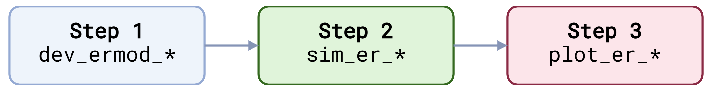
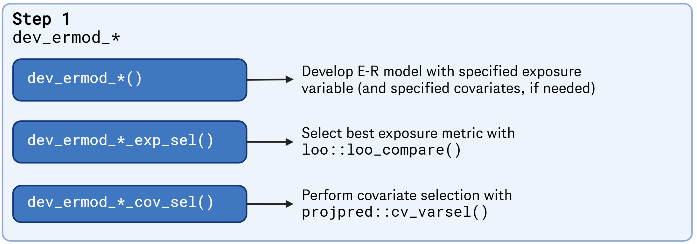

0. Overview of the package
overview_of_the_package.RmdThis vignette provides an overview of BayesERtools.
0. Analysis workflow & supported model types
Analysis can be performed in the following simple steps.

Supported model types are as follows:
|
Binary endpoint
|
Continuous endpoint
|
|||
|---|---|---|---|---|
| Linear (logit) | Emax (logit) | Linear | Emax | |
| backend | rstanarm |
rstanemax |
rstanarm |
rstanemax |
| reference | 🔗 | 🔗 | 🔗 | 🔗 |
| develop model | ✅ | ✅ | ✅ | ✅ |
| simulate & plot ER | ✅ | ✅ | ✅ | ✅ |
| exposure metrics selection | ✅ | ✅ | ✅ | ✅ |
| covariate selection | ✅ | ❌ | ✅ | ❌ |
| covariate forest plot | ✅ | ❌ | 🟡 | ❌ |
| ✅ Available, 🟡 In plan/under development, ❌ Not in a current plan | ||||
1. ER model development
The package provides a set of functions to develop ER models. The
following functions are available:
Binary endpoint
- Linear logistic regression:
- Emax logistic regression:
Continuous endpoint
- Linear regression:
- Emax model:

2. Simulation from developed ER model
The following functions are available for simulation from developed ER models:


Acknowledgement
Figures created with https://www.biorender.com